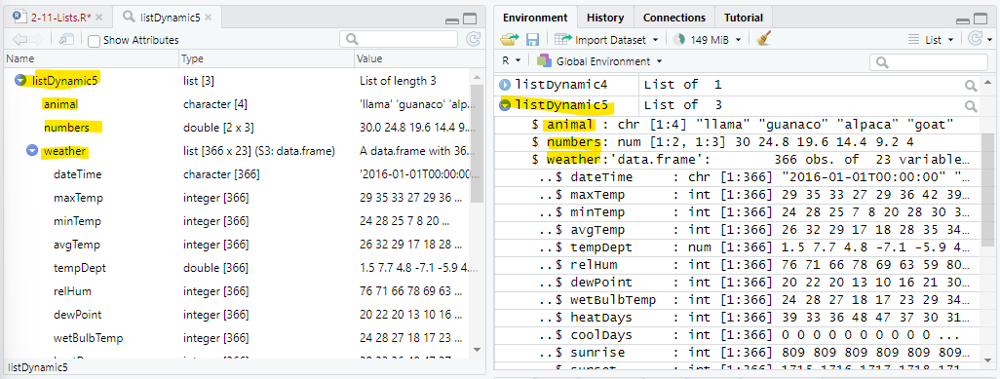
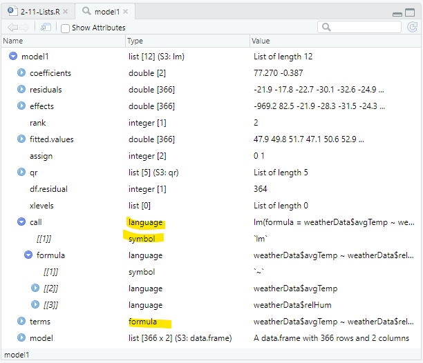

Objects and Attributes
Breakpoints
The script for the lesson is here (right-click, save link as... -- put in scripts folder).
The data used for this lesson and the application is here
As mentioned in last lesson, there are 2 types of objects (i.e., variables) in R:
The relationship between Atomic Vectors and Lists is analogous to the relationship between folders and files on your computer. Files, like atomic vector, hold information, or data. Folders, like Lists, are containers for other folders and files.
Last lesson we talked mostly about atomic vectors. This lesson we will talk mostly about lists. As you will see in this lesson, Lists create a tree-like structure for your data. At the end of the tree is the Atomic Vectors
A List is an object that holds other (usually related) objects. When you create a plot or perform a statistical test, the results are often stored as Lists as we will see later in the lesson.
We will create our own List with three objects in it.
The three objects will be:
someAnimals = c("llama", "guanaco", "alpaca", "goat");
someNumbers = matrix(nrow=2, ncol=3, seq(from=30, to=4, length.out=6))weatherData = read.csv(file="data/Lansing2016NOAA.csv");
Notice that, in the Environment, weatherData has an arrow to expand it whereas someAnimals and someNumbers contains all of their information in one line. It is this expand arrow that indicates an object is a List (whereas the other objects are atomic vectors). weatherData is a specialized List where all the objects inside are vectors of the same length (i.e., a data frame):
The expand arrow in the Environment indicates that the object is a List (i.e., holds other objects)
We can create a List with the three objects above using the list() function:
listAtOnce = list(someAnimals, someNumbers, weatherData);
This will add listAtOnce to the Environment. From there we double-click on it to see it in a Viewer tab. The Viewer tab offers a more helpful and informative view of the List.
A couple things to notice about listAtOnce in the Viewer tab:
The List inside a Viewer tab
Note: When looking at the List in the Viewer, the objects with expand arrows are functionally similar to folders, those without arrows are functionally similar to files
If we want the objects inside the List to have names, then we have to specify the names while creating the List. You do that by setting a name equal to the object when calling list():
listAtOnce2 = list(animals = someAnimals,
numbers = someNumbers,
weather = weatherData);
This makes animals, numbers, and weather the names of the objects someAnimal, someNumbers, and weatherData inside the List. You can choose any name, including the same as the original objects:

Adding names to the objects inside the List
Note: names inside Lists, like variables, should follow programming naming conventions -- but this is not enforced in R.
In the previous example, all the objects put in the List were put in at once. What often happens is that data is generated and gets dynamically added to a List, so the objects are put in the List separately. We are going to create a List equivalent to listAtOnce except the three object will be put in one at a time.
First we create a List with nothing in it (i.e., an empty list):
listDynamic = list();
listDynamic: List of 0
Then add the object someAnimals to the List.
listDynamic2 = append(listDynamic, someAnimals);
Somewhat unintuitively, append() does not append the object someAnimals to the List. Instead, append() appends each value within someAnimals to the List -- making each value a separate object. Now you have a List with 4 string vectors (each with 1 value) .... this is not what we want.
Appending an object one value at a time...
The solution is also a bit unintutive. We want is to append someAnimals to the List as vector and, to do this, we need to wrap someAnimals inside its own List:
listDynamic3 = append(listDynamic, list(someAnimals));
And, if we want the object to have a name inside the List, then we need to provide the name -- just like fig ##:
listDynamic4 = append(listDynamic, list(animal = someAnimals));
listDynamic3 and listDynamic4 both now have a vector with four character values, the latter has that vector named:

Lists with appended objects
We will now append someNumber and weatherData using append():
listDynamic5 = append(listDynamic4, list(numbers=someNumbers));
listDynamic5 = append(listDynamic5, list(weather=weatherData));
And see that listDynamic5 is a List with three objects in it: animals, numbers, and weather -- just like listAtOnce2 (fig ##).

Lists after the three objects were appended and named
The RStudio Viewer tab for Lists has a nice feature where it will shows you how to subset an object inside a List when you click on it. In listDynamic5 List, when you click on avgTemp in the weather dataframe -- and at the bottom of the tab, RStudio shows the code to subset avgTemp:
listDynamic5[["weather"]][["avgTemp"]]
If you click the document icon with an arrow on the right-side, RStudio will put the above code in the Console where you click Enter to execute it:
Opening an object within a List from the Viewer tab
Every object in the List Viewer with a value under Name in fig ## can be accessed with both the $ and [[ ]] subset operators -- RStudio always uses [[ ]].
Here are two ways to subset the animal object inside listDynamic5 -- the results are saved to anim1 and anim2:
anim1 = listDynamic5[["animal"]];
anim2 = listDynamic5$animal;
The string (chr) vectors anim1 and anim2 have the same values as the original someAnimals vector:
anim1: chr [1:4] "llama" "guanaco" ...
anim2: chr [1:4] "llama" "guanaco" ...
someAnimals: chr [1:4] "llama" "guanaco" ...
Here are three ways to subset the dewPoint vector within weather, which is within listDynamic5:
dewPoint1 = listDynamic5$weather$dewPoint;
dewPoint2 = listDynamic5[["weather"]][["dewPoint"]];
dewPoint3 = listDynamic5[["weather"]]$dewPoint;
Again, all three saved values are identical to the original weatherData$dewPoint:
dewPoint1: 20 22 20 13 10 16 ...
dewPoint2: 20 22 20 13 10 16 ...
dewPoint3: 20 22 20 13 10 16 ...
🞃 weatherData: 366 obs. of 23 variables
$ dewPoint: 20 22 20 13 10 16...
$ and [[ ]] are equivalent operators when you are working with named objects within a List. $ is more convenient to use because it involves less typing and RStudio will give you suggestions.
Objects within a Lists can also be accessed by their numeric order using [[ ]]:
anim3 = listDynamic5[[1]];
dewPoint4 = listDynamic5[[3]][[7]];
But, you cannot use the $ operator to subset by number:
# anim3 = listDynamic5$1; # will cause an error
So, if the object inside a List does not have a name, as in listAtOnce (fig ##), then you have to use [[ ]] to subset the unnamed object by numeric placement.
You can use [ ] to subset the List, but instead of getting the object, you will get a List with the object in it:
anim4 = listDynamic5["animal"];
In the Environment, we can see that anim1, anim2, and anim3 (subsetted with either [[ ]] or $) are all character vectors with 4 values. But, anim4 (subsetted with [ ]) is a List with a character vector that has 4 values:
anim1: chr [1:4] "llama" "guanaco" ...
anim2: chr [1:4] "llama" "guanaco" ...
anim3: chr [1:4] "llama" "guanaco" ...
🞃 anim4: List of 1
$ animal: chr [1:4] "llama" "guanaco" ...
The difference between using [[ ]] or $ vs [ ] for subsetting objects within a List
This is not very useful so [ ] is rarely used to subset a List. [ ] is mostly used to subset atomic vectors.
We are going to move from creating our own Lists to looking at Lists that are returned when you call certain functions, specifically ggplot() and lm().
First, we will copy the scatterplot and linear regression of humidity vs. temperature from lesson 2-1 and save the results, which will be a List, to plot1:
plot1 = ggplot( data=weatherData ) +
geom_point( mapping=aes(x=avgTemp, y=relHum) ) +
geom_smooth( mapping=aes(x=avgTemp, y=relHum),
method="lm" ) +
labs( title="Humidity vs Temperature",
subtitle="Lansing, MI -- 2016",
x = "Average Temperatures (Fahrenheit)",
y = "Relative Humidity") +
scale_x_continuous( breaks = seq(from=10, to=80, by=10) ) +
theme_bw() +
theme( axis.text.x=element_text(angle=90, vjust=0.5) );
plot(plot1);

Scatterplot of humidity vs. temperature with a linear regression
We can also create a linear regression model of humidity vs temperature using lm() and save the results to a list named model1:
model1 = lm(formula=weatherData$avgTemp~weatherData$relHum);
We can look at a summary of the model using print(summary(model1)):
> print(summary(model1));
Call:
lm(formula = weatherData$avgTemp ~ weatherData$relHum)Residuals:
Min 1Q Median 3Q Max
-44.213 -14.424 -0.213 15.479 36.461Coefficients:
Estimate Std. Error t value Pr(>|t|)
(Intercept) 77.27006 6.07644 12.716 < 2e-16 ***
weatherData$relHum -0.38696 0.08722 -4.437 1.21e-05 ***
---
Signif. codes:
0 ‘***’ 0.001 ‘**’ 0.01 ‘*’ 0.05 ‘.’ 0.1 ‘ ’ 1Residual standard error: 18.59 on 364 degrees of freedom
Multiple R-squared: 0.0513, Adjusted R-squared: 0.04869
F-statistic: 19.68 on 1 and 364 DF, p-value: 1.213e-05
Summary of a model of a linear regression
Both the plot1 and model1 are List objects and the information for the plot and summary of the linear model are either in the List, or calculated from values in the List.
The plot (fig ##) and the summary (fig ##) above are both ways of getting at the data that comes back from the corresponding functions calls ggplot() and lm(). But, both of these calls also return a List that contains a lot of information.
Let's first look at model1, which is the List returned from the lm() call:

The List returned from a lm() call
model1 has information that is inside the summary, for instance the estimate for the intercept is at:
> model1$coefficients["(Intercept)"]
(Intercept)
77.27006
Note: (Intercept) does not follow good programming naming practices!
We need to use [ ] to subset coefficients because coefficients is an atomic vector. Note: Subsetting operators are a bit inconsistent in R and it is just something you need to get used to.
We can also subset the first ten residuals from model1:
> model1$residuals[1:10]
1 2 3 4 5
-21.8609230 -17.7957344 -22.7305458 -30.0869984 -32.5696589
6 7 8 9 10
-24.8914326 -19.4392818 -12.3130738 -0.1216773 -20.0869984
Or, subset every twentieth value in fitted.values:
> model1$fitted.values[seq(from=1, to=366, by=20)]
1 21 41 61 81 101 121 141
47.86092 45.92611 52.11751 44.76522 57.53498 46.31307 49.02181 57.92194
161 181 201 221 241 261 281 301
54.43928 57.53498 54.82624 55.21321 47.47396 45.15219 50.56966 43.60434
321 341 361
48.24789 46.31307 46.70004
There are also a lot of other, more obscure, values in the List object which we will not go through. The point is that there is a lot of information inside the List and that information can be extracted using subset operators.
If you look through model1, you will find three new variable types: language, symbol, and formula. These variables types are used by R programmers to store the code that created the List -- this is not something you will need to deal with at this level.

Some of the less common variable types appear in this List
The List returned when ggplot() is called is far more complex than the one returned with lm(). Inside the ggplot() List are many embedded Lists that contain everything required to make the plot, including all the data used in the plot and the styling.
There is a also a new object type called environment, which is sort of a modern version of a List. The name is confusing because it is structurally related to, but not the same thing as, the Environment tab in RStudio. This is not something we will explore in this class -- just know that an environment object, like Lists, holds other objects and is also analogous to folders on your computer.
The List generated by ggplot() contains environment objects
We can both extract values from a List and change the values. In this case, we can make changes to the plot by changing values within the List.
Let's first make a copy of the plot and makes changes on the copy:
plot2 = plot1;
The changes we will make are:
plot2$theme$text$colour = "red";
plot2$labels$x = "Average Temperature (\u00B0 F)";
plot2$theme$line$linetype = 2;
plot2$theme$line$size = 0.8;
And plot the results
plot(plot2);
The plot after changes were made to the List
Of course, all of these changes can be made within the ggplot() function call, which is most likely what you would want to do. But, the List object contains everything that went into making the plot so it can be modified to tweak the plot.
If you have any questions regarding this application, feel free to email them to the instructor here. You can attach the whole Project Folder as a zipped file.
A) Why is it better to use subset objects by name instead of position numbers?
B) Using weatherData, create a linear model of dewpoint vs temperature
C) Using only values in linearModel1, find and save:
D) Using the data from Lansing2016Noaa.csv, create a scatterplot of dewpoint vs average temperature
E) Make a copy of scatterPlot1 and make 1 text change and 2 style changes to the copy
F) Subset an object in the GGPlot list that is at least 6 levels deep. (bonus... subset one that is 7 levels deep)
G) Create one List named app2_12_List that contains the objects from parts A-F in this application
Save you script file as app2-12.r in the scripts folder of your RStudio Project for the class.